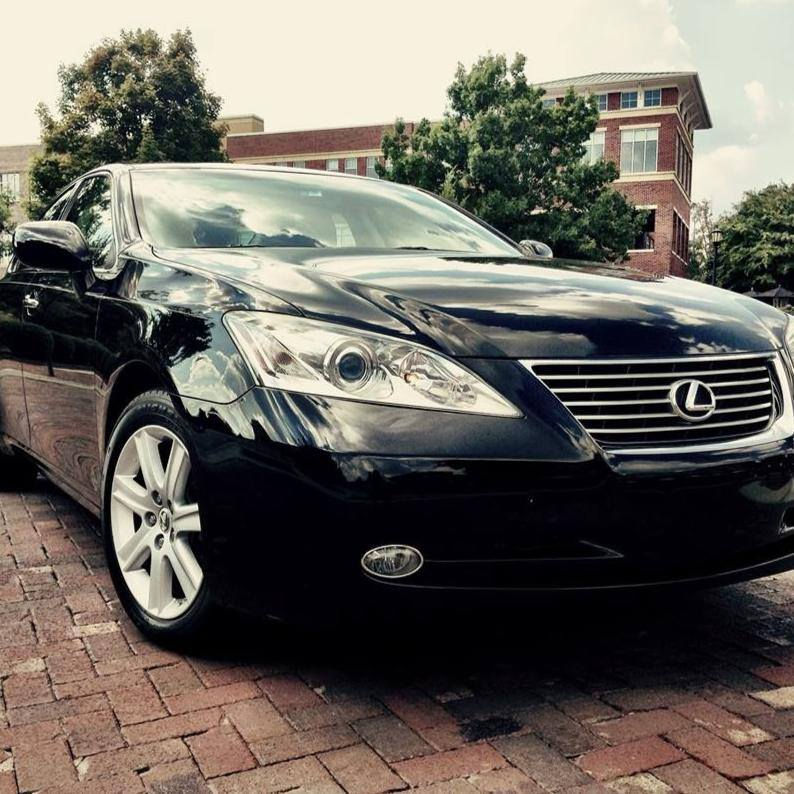

RDU Transfers
Pre-scheduled pickups from hotels to RDU, plus airport arrivals back to Chapel Hill and Durham.
Hotel & RDU Transportation
Carolina Sedan provides scheduled RDU transfers, local point-to-point rides, dinner transportation, campus pickups, and business travel support for hotel guests across Chapel Hill, Carrboro, Durham, Raleigh, and the Triangle.

For Front Desks & Guests
Hotel guests often need certainty: an early RDU pickup, a ride to UNC or Duke, transportation to a medical appointment, or a professional car for a dinner, wedding, conference, or business meeting.
Carolina Sedan is a preferred car service for many UNC and Duke departments, and that same scheduled, professional approach works well for hotels serving university visitors, families, executives, and event guests.
Hotel Ride Types
Pre-scheduled pickups from hotels to RDU, plus airport arrivals back to Chapel Hill and Durham.
Transportation to UNC, Duke, admissions visits, meetings, lectures, interviews, and campus events.
Private rides to restaurants, weddings, performances, donor events, and late-night returns.
Professional local service for executives, visiting teams, conference guests, and VIP travelers.
Easy for guests
Carolina Sedan will confirm timing, price, pickup instructions, and the best contact method for the rider.